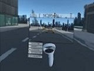
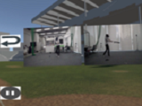
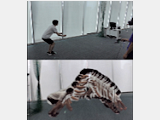
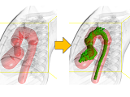

Interactive Graphics
Research Group
Research Group
|
2024, Learned Inference of Annual Ring Pattern of Solid Wood. CGF 23.
|
|
2023, Fabricatable 90° Pop-ups.
More info |
|
2023, ホウセキゾウムシの3Dモデル集.
More info |
|
2022, Procedural Texturing of Solid Wood with Knots.
More info |
|  |
2022, Virtual Reality空間における写真撮影練習システムの提案と評価.
More info |
|  |
2022, スポーツ反復練習のためのVirtual Realityを利用した高速度撮影システム.
More info |
|
2021, A System for Practicing Ball/Strike Judgment in VR Environment.
More info |
| 2021, Multi-Window Web Browser with History Tree Visualization for Virtual Reality Environment. More info |
| 2021, Animating Various Characters Using Arm Gestures in Virtual Reality Environment. More info |
| 2020, Ray-Casting-based pointing interface for naked-eye stereoscopic displays. More info |
|  | 2020, Life-size Seaquential Photography in a Mixed Reality Environment. More info |
|  | 2020, Spatially Controllable Region Growing for Segmenting Heart Chambers. More info |
| 2019, Focus stacking by multi-viewpoint focus bracketing. More info |
 |
2019, Pop-up digital tabletop. More info |
| 2018, Digitization of natural objects with micro CT and photographs. More info |
| 2018, Japanese Kanji Font Style Transfer based on GAN with Unpaired Training. More info |
| 2018, 最小切断面を利用した2値画像の意味的領域分割. More info |
 |
2017, Inverse Appearance Modeling of Interwoven Cloth. More info |
 |
2017, Baseball Spin Measurements with High-Speed Cameras. More Info |
Address : Room 14I32, 3-7-5 Toyosu, Koto-ku, Tokyo, Japan, 135-8548
住所 : 〒135-8548, 東京都江東区豊洲3-7-5, 芝浦工業大学豊洲キャンパス，研究棟14F, 14I32室